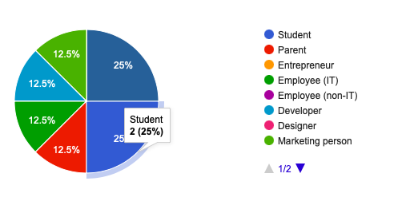

- brief -
Redefining what's possible with Augmented Reality (AR) by providing immersive
and straightforward AR and 3D experiences across 12 verticals.
- context -
ARtekk is a project designed to revolutionize the way users interact with various products using AR. It
includes 12 verticals, such as lens, clothes, footwear, caps, makeup, jewelry, furniture, watches, cars,
newspapers, and billboards, allowing users to explore and engage with products in a dynamic and engaging
way.
- problem statement -
There was a need for a more engaging and interactive way for users to experience products, particularly in
retail and public spaces, where traditional methods lacked the immersive and personalized experience that AR
can provide.
- quick glance for hiring managers -
- Project Leadership: Led UX design and development of ARtekk, an immersive AR platform with
virtual try-ons for fashion, furniture, and cosmetics.
- User Research: Conducted user research, focusing on diverse personas and accessibility needs.
- AR Development: Developed seamless AR experiences using vanilla web components and a custom
design system.
- Testing & Optimization: Led A/B testing for onboarding and UI, refining user flows for
simplicity.
- User Validation: Conducted in-person user testing in malls, where women and girls loved the
jewelry and clothing try-ons, validating market fit.
- Collaboration: Collaborated with cross-functional teams to align with business goals and
technical constraints.
- Accessibility Improvements: Overcame accessibility challenges, successfully enhancing customer
engagement. Future plans include improving AR overlays and customization.
- crafted solution -
ARtekk offers a seamless AR experience that allows users to virtually try on and interact with products. The
solution includes AR mirrors in public spots, such as in front of stores, where users can try on clothes,
shoes, and other items in a virtual environment. This experience is further enhanced by the ability to
capture pictures and videos within the AR setting. We also offer B2B solutions where our vanilla built web
components can be used by any other platform regardless of their framework, for example we can provide AR
makeup tools for cosmetic companies, embedded into their existing website.
- timeline -
- Team: Yogendra (Primary Designer), Paawan (Designer), Sahil (Product Manager), Gourav (Frontend),
Lovely (Frontend), Shubhi (Backend), Merul (Senior Backend and CTO), Ananya (Frontend Intern), Prashant
(Marketing Lead), Jyoti (Social Media), Pratibha (Marketing and Sales), and me (User Experience Lead)
- My Role: UX Engineer Lead, leading the design and development of the AR experiences, building a
vanilla web component for AR interactions.
- Duration: 6 weeks
- Tools Utilized: Figma, HTML, CSS, JavaScript, Svelte, Postgres, 8thWall, SnapAR,
WebXR, Google Forms
- design system styleguide -
Developed a design system specific to ARtekk, including guidelines for color usage, typography (Space
Grotesk), and component styles to ensure consistency across the application.


- project goals -
- Provide an easy-to-use, immersive AR experience for users.
- Increase customer engagement by offering virtual try-ons and interactive product
displays.
- Develop a scalable AR solution that can be applied across multiple verticals.
- Collect and analyze user feedback to continually improve the AR experience.
- research -
- Personas: Developed 8 personas, focusing on different types of shoppers—tech-savvy users,
traditional shoppers, users with accessibility needs (e.g., those with vision impairments or motor skill
challenges), and early adopters of AR technology.
- Target Audience: Shoppers, especially those interested in fashion, tech, and luxury items, as
well as brands looking to innovate in their customer engagement strategies.
- Analysis: Surveyed users to gauge interest in AR try-ons, comfort level with using AR in public,
and preferences for interactive shopping experiences. Found that while interest in AR was high, there
were concerns about privacy and ease of use.


We used Google Forms to get relevant data from diverse users who go shopping and may love to
see an AR mirror
that shows with clothes as they virtually try-on.
- brainstorm and ideation -
- Possible Solutions: Developed various AR interfaces, from simple product overlays to fully
immersive virtual environments.
- Chosen Solution: Opted for a balanced approach that combined ease of use with advanced features
like photo and video capture within the AR environment. This solution was chosen for its broad appeal
and potential to drive engagement.
- iterations -
Iterated on the onboarding process, reducing steps to make the AR experience more accessible. Conducted A/B
testing to refine UI elements, ensuring that users could easily navigate and engage with the AR features.
- sketches and wireframes -
Created initial sketches on pen and paper, focusing on user flow and interaction points. These were
translated into wireframes, which were then iterated upon with input from the design team.

- design -
The final designs were polished, with a focus on clarity and engagement. Screens included intuitive
navigation and visually appealing AR experiences. These designs were presented in Figma.

ARtekk ↗
- user and usability testing -
Conducted user testing in public spaces where the AR mirrors were deployed. Gathered feedback on the ease of
use, effectiveness of the try-on experience, and overall satisfaction. Made adjustments based on this
feedback, such as improving the accuracy of the AR overlays and simplifying the interface.
- conclusion -
- Challenges: One of the main challenges was ensuring that the AR experience was accessible and
easy to use for a broad audience, including those who were unfamiliar with AR technology.
- Learnings: Learned the importance of user-centered design, especially in emerging technologies
like AR. The project reinforced the need to balance innovation with usability.
- Outcomes: Successfully developed a scalable AR solution that enhanced customer engagement and
provided valuable insights for future AR projects.
- scope of improvements -
Future improvements could include integrating more advanced AR features, such as AI-driven customization
options and further refinement of the AR overlays to improve realism.
- what could have been better -
The onboarding process could be further streamlined, and additional user manuals could be provided, apart
from the docs in the website, to help users understand how to make the most of the AR features.
- final feedback and suggestions -
We'd like to ask users for feedback on their experience with ARtekk, especially focusing on how comfortable
they felt using the AR features in public spaces and what additional features they would like to see.